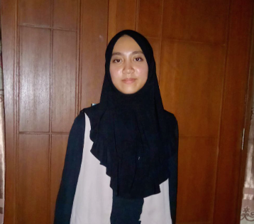
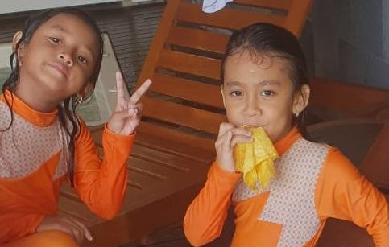
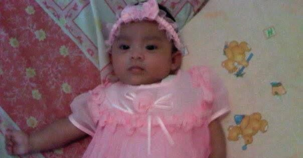
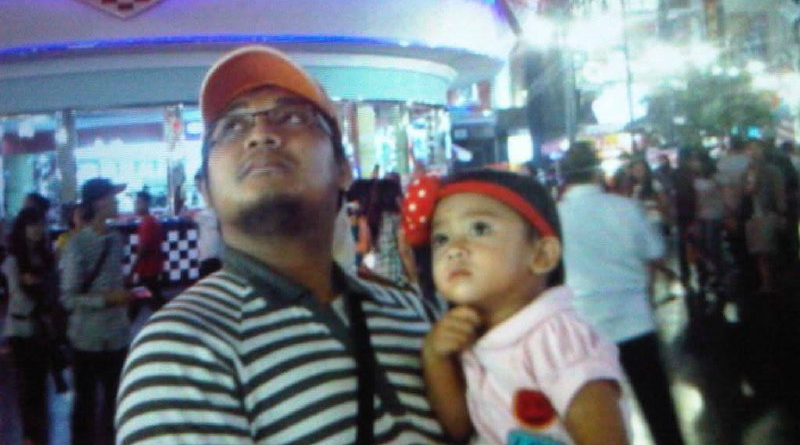
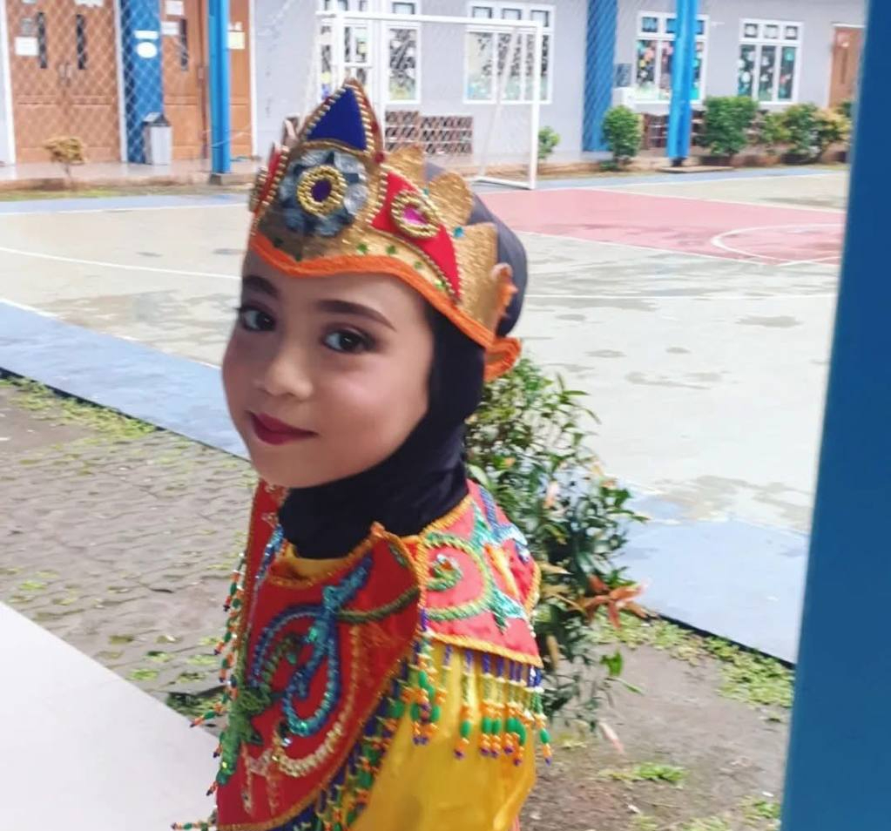
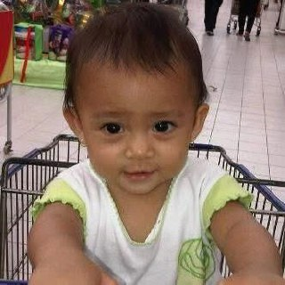
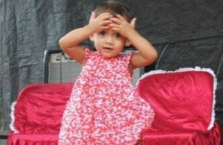
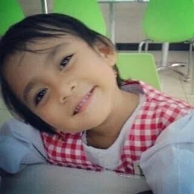

Hai! Nama saya Azzalea Khaliqa Ozahin, seorang siswi berumur 15 tahun dari SMPIT Al Haraki. Saya sangat menyukai social science seperti seperti sejarah, sosiologi, dan politik. Selain itu, saya juga aktif mengikuti kompetisi bidang Biologi sebagai persiapan untuk sekolah menengah atas.
Saya adalah pribadi yang kreatif, imajinatif dan selalu ingin tahu hal baru. Saya sangat menikmati proses menciptakan sesuatu yang memiliki nilai estetika, terutama terkait hobi saya (belajar sejarah), termasuk design website ini. Saya berorientasi dalam bidang sosial dan pengetahuan alam dengan pengalaman termasuk berorganisasi dan ikut serta dalam beberapa kompetisi sains
Saya sangat tertarik dalam bidang intelektual, termasuk pengetahuan sosial (Sejarah, Politik, Sosiologi) dan alam (Biologi, Fisika, Kimia). Selain itu, saya juga menyukai olahraga, contohnya seperti sepak bola dan bersepeda.
Saya termotivasi untuk memasuki jurusan Bioproses (Engineering & Biology) dan berharap dapat menjadi seorang Insinyur Bioproses di masa depan. Saya berharap dapat terus mengembangkan kemampuan diri agar dapat menjadi pribadi yang bermanfaat dan menginspirasi banyak orang.
Selama kelas IX, saya mendapatkan banyak pengalaman dan pelajaran baru yang membantu saya berkembang, baik dalam belajar maupun keterampilan. Saya sangat menghargai dan mengingat seluruh kenangan selama di kelas IX.







